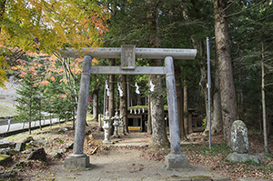
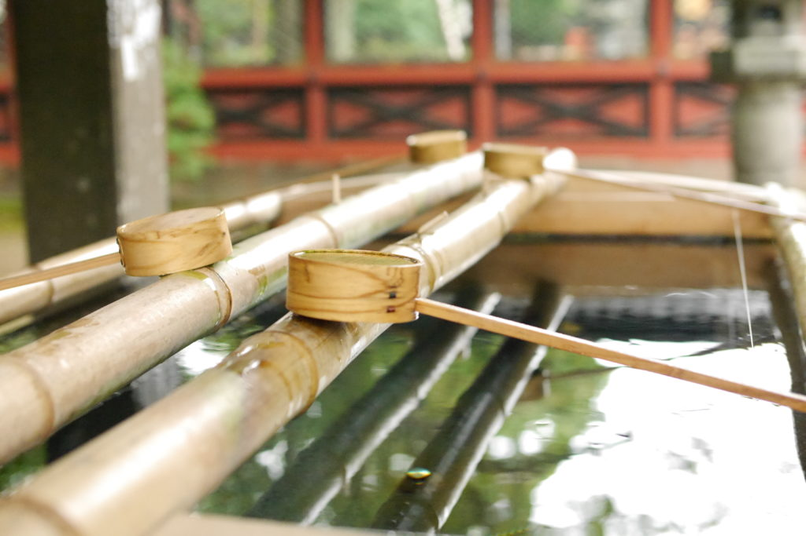

How to visit shrines, manners
multilingual support
Translation errors may occur due to the use of translation sites.
How to visit shrines and temples
柏手(Kashiwade)

1. Put your money in the money box.
2. If there is a bell, ring it only once.
3. Bow twice.
4. Clap twice.
5. I offer my thanks.
6. Bow once.
手水舎(Chozuya)

A Chozuya is a place to purify oneself before visiting a deity or other deity.
1. take a bow.
2. Take a ladle with your right hand and wash your left hand.
3. Switch the ladle to your left hand and wash your right hand.
4. Switch the ladle to your right hand again, and pour water into your left palm.
5. Rinse your mouth with the water.
6. Hold the ladle vertically to wash it and put it back.
What not to do at shrines
1. Passing through the torii gate without bowing
The gate and entrance are meant to serve as a boundary between the Shinto realm and the mundane world. Since beyond the torii gate is the place of the gods, visitors should first bow in front of the gate before entering the temple grounds.
2. bring in something that is considered “impure”
It is prohibited to bring uncleanness into the Shinto shrine. Wearing animal-printed costumes or fur products, or carrying raw food with you is also prohibited. Also, coming to the shrine with a fever, cough, or runny nose will also lead to defilement of the sanctuary.
3. walk in the middle of the approach
Walk at either end of the approach to the shrine, and avoid walking in the middle. The center of the approach is called "Seityu," or the path of the gods, and it is considered impolite for people to pass through there.
4. Excessive wearing of metal and jewelry
It is said that when visiting a shrine, it is best to dress as little as possible and not wear unnecessary things, which is closer to the original form of worship. When you arrive at the main shrine, remove all accessories and hats to the extent possible so that the gods cannot see you.
5. Take a picture facing the sacred body of the main shrine.
Sometimes you will see people holding up their phones toward the main shrine, but this is bad manners. Since the shintai is not a spectacle but an alter ego of God, it is considered rude to take pictures of it.
6. walking while walking
Actions such as looking at a cell phone, listening to music, chatting, etc., which are considered "walking while walking," can cause inconvenience to other worshippers and hygiene problems.
7. throw an offering
If you throw something made of metal with all your might, it will hit a person or building, and instead of striking luck, you will hit a bachi. Put the object in gently as if you were making an offering.